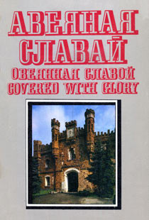
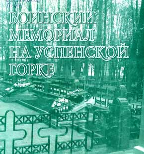

Монументы мужества и славы
Мы были живыми, как время.
Р.Рождественский
Мы были большими, как время.
Теперь —
мы в легендах прославленных дней.
Теперь —
мы в граните и бронзе.
Теперь —
мы в поэмах и прозе.
Теперь —
мы в безмолвье могильных камней.
Спасибо за память, потомки!
Спасибо за верность, потомки!
Спасибо
за то, что алеет заря.
Не зря мы над смертью смеялись!
Не зря наши слезы и ярость!
Не зря наши песни.
И клятвы—не зря!

63.3(4Беи)
А 19
А 19
Сигла хранения
1чз
Авеяная славай [Выяўленчы матэрыял] = Овеянная славой = Covered with glory = Aureolee de gloire = Mit ruhm gekront = Aureola de gloria : [фотаальбом] / [аўт. тэксту і фота Г. Л. Ліхтаровіч ; маст. А. І. Дрозд]. - 2-е выд. - Мінск : Беларусь,
1988. - 63 с. : фотаіл. - Тэкст беларус., рус., англ., фр., ням., ісп.

721.7
Б 74
Б 74
Сигла хранения
1ф1-чз 1чз
Богуславский, Г. А. Вечным сынам отчизны: Памятники Великой Отечественной войны : фотоальбом / [фото П. Бернштейна и др. ; редкол.: И. Баграмян [ и др.]]. - Москва : Советская Россия, 1975. - 670 с. : ил.

63.3(4Беи)
Б 87
Б 87
Сигла хранения
1чз
Брестская крепость на ветрах истории [Изоматериал] : [альбом] / [под общ. ред. В. В. Губаренко, Л. А. Цуприк ; авт. концепции и текста А. М. Суворов ; фото: А. А. Гладыщук [и др.]]. - Брест : Редакция журнала СЭЗ, 2007. - 152 с. : фотоил.
- Библиогр.: с. 151. - Индекс: с. 150.

63.3(4Беи)
К 93
К 93
Сигла хранения
1чз
Курган Славы [Изоматериал] : [фотоальбом] / [авт.-сост.: Л. М. Драбович [и др.]] ; Федерация профсоюзов Беларуси. - Минск : БЕЛТА, 2005. - 55 с. : фотоил.

63
П 44
П 44
Сигла хранения
1чз
Подвиг народа : памятники Великой Отечественной войны, 1941 - 1945 / [Алексеева Л. И., Андреев Э. Ф., Андрющенко Н. К. ; сост. и общ. ред. В. А. Голикова]. - Москва : Политиздат, 1984. - 341 с. : ил. - Авт. указаны в конце кн.

63.3(4Беи)
П 44
П 44
Сигла хранения
1чз
Подвигу народа жить в веках! = Подзвігу народа жыць у вяках! : празднование 40-летия освобождения Белоруссии от нем.-фашист. захватчиков (1944-1984) : [сборник]. - Минск : Беларусь, 1985. - 199 с. : цв. ил. - Текст парал.: белорус., рус.

63.3(4Беи)
П 44
П 44
Сигла хранения
1чз
Подлипский, А. М. Воинский мемориал на Успенской горке : [очерк]. - Витебск, 2011. - 32 с. : фотоил. - Библиогр. в обл. примеч. - На обл. авт. не указан. - Дар авт. б-ке ВГУ имени П. М. Машерова с автогр.

63.3(4Беи)
П 44
П 44
Сигла хранения
1чз
Подлипский, А. М. Из когорты непокоренных / А. М. Подлипский. - (Витебск : Витебская областная типография, 2012). - 46 с. : фотоил. - Библиогр. в обл. примеч.

9(С3)2
П 69
П 69
Сигла хранения
1чз
"Прарыў"- Мемарыяльны комплекс : [альбом] / тэкст М. М. Кірпіча, В. К. Пасаха ; фота А. М. Манцветава ; фотахронікі Белта ; маст. І. Н. Лявонаў ; рэд. І. Д. Крымава. - Мінск : Беларусь, 1983. - 32 с. : іл. - Тэкст беларус., рус., англ.,
фр., ням., ісп.

63.3(4Беи)
Х 25
Х 25
Сигла хранения
1чз
Хатынь = Khatyn = Chatyn : Альбом / тэкст і фота Я. К. Казюлі ; пер. на англ. мову Л. Л. Сеннікаў ; пер. на ням. мову А. І. Павачка. - Мн. : Беларусь, 1998. - 75 с. : фотаiл. - Тэкст беларус., рус. англ. i ням.
Дополнительная литература по разделу
-
26 М 62
Мiнск = Минск = Minsk : Фотаальбом / Склад. i аўт. тэксту В. І. Анiкiн; Фота Г. Л. Лiхтаровiч i iнш.; Маст. В. Р. Мiшчанка. - 2-е выд. - Мн. : Беларусь, 2000. - 110 с. : фотаiл. - Тэкст беларус., рус., англ.1ибо 1чз
-
9(С)Бел А 65
Андрушчанка, М. Хатынь. - Мінск : Беларусь, 1969. - 55 с. : іл.1чз
-
9(C) Б 89
Брэсцкая крэпасць / тэкст А. Махнача ; маст. А. Яўменаў. - Мінск : Звязда, 1966.1чз
-
9(С)27 В14
Вайнруб, Е. Г. Курганы боевой славы. - Минск : Полымя, 1981. - 38 с. : ил.1аб 1чз
-
9(С)27 В27
Великий подвиг [Изоматериал] : фотоальбом / сост.: А. Вольгемут, Г. Зельма ; авт. текста: Р. Июльский, Е. Кригер, В. Любовцев, И. Падерин ; послесл. К. Симонова ; фото С. Альперина [и др.]. - 2-е доп. изд. - Москва : Политиздат, 1966. - 332 с. : ил.2аб 1чз
-
73С2 В39
Вечная слава: Памятник воинам Советской Армии, павшим в боях с фашизмом в Берлине [скульптор Вучетич Е., архитектор Белопольский Я.] [Изоматериал] / вступ. ст. И. А. Бартенева. - Ленинград : Художник РСФСР, 1967. - 13 с. : ил.1ф3
-
9(С)27 В61
Война народная, священная война [Изоматериал] : альбом-выставка / сост. П. Г. Гелюх ; худож. Е. С. Васильев. - Москва : Политиздат, 1970. - 6 бр. в обертке : ил. - Экз. деф.: отсутствует брошюра 1 "За нашу советскую Родину!" и 5 репрод.1аб
-
72С1 Д83
Дунаев, М. М. На земле Великой битвы : (Курская и Орловская области). - Москва : Искусство, 1976. - 152 с. : ил. - (Дороги к прекрасному).1аб
-
73С2 И90
Историко-революционные памятники СССР : краткий справочник / [сост. А. Г. Халтурин]. - Москва : Политиздат, 1972. - 303, [1] с. : фотоил.4аб 1чз
-
63 К29
Катастрофа. Помнить... и никогда не забывать : [комплект из 12 брошюр]. - Иерусалим : Израильский информационный центр, [200-?] (Иерусалим : Ахва-Пресс, [200-?]). - 1 папка (12 отд. бр.).1аб
-
9(С)Бел К 93
Курган Славы / тэкст Б. Стральцова ; маст. В. Пастушкоў. - Мінск : Беларусь, 1969. - 6 с. : іл.1аб
-
721.7 К93
Курган Славы : альбом / тэкст Б. В. Стральцова. - 5-е выд. - Минск : Беларусь, 1981. - 32 с. : іл. - Тэкст беларус., рус.1аб
-
63.3(4Беи) К93
Курган славы = Mound of glory / [текст Б. В. Стрельцова]. - Минск : Беларусь, 1987. - 55 c. : в основном цв. ил. - Загл. также: фр., нем., исп. - Текст парал.: белорус., рус., англ., фр., нем., исп.1чз
-
77 Л44
Ленинград [Изоматериал] : фотоальбом / [фото Г. Савина ; вступ. очерк С. Орлова]. - Ленинград : Советский художник, 1969. - 158 с. : ил.1чз
-
73 Л63
Лисаевич, И. И. Скульптура Ленинграда [Изоиздание] : [альбом]. - Ленинград : Искусство, 1963. - 206 с. : ил. - (Искусство).1аб 1ф3
-
73С2 М22
Мамаев курган. Памятник-ансамбль героям Сталинградской битвы. Волгоград [Изоматериал] : [альбом] / [авт. кол.: И. Падерин ; Е. В. Вучетич (скульптор) [и др.]]. - Изд. 6-е. - Волгоград : Нижне-Волжское книжное изд-во, 1974. - 46 с. : ил.1чз
-
9 М49
Мемориальные ансамбли и памятники на территории СССР, посвящённые Великой Отечественной войне 1941-1945 гг. : библиографический указатель. Дополнительный выпуск. 1 / [сост. В. Г. Хольцов] ; Акад. художеств СССР, Ин-т живописи, скульптуры и архитектуры им. И. Е. Репина, Науч. б-ка Акад. художеств СССР. - Ленинград, 1985. - 93 с.1ибо
-
9(С3)2 М62
Минск - город-герой : справочник / [редкол.: П. У. Бровка (гл. ред.) [и др.]]. - Минск : БелСЭ, 1976. - 381, [2] с. : ил. - Библиогр.: с. 381.1чз
-
9(С3)2 М62
Минск = Minsk : [фотоальбом] / [авт. текста: И. С. Карпенко, П. П. Сакович ; фото М. П. Ананьина [и др.]]. - Минск : Беларусь, 1974. - 48 с., 29 л. ил. - Текст парал.: рус., англ., фр., нем., исп.1чз
-
85.113(4Беи) М62
Мінск = Минск = Minsk : Фотаальбом / склад. і аўт. тэксту С. У. Пешын ; маст. У. І. Шолк ; фота А. П. Дрыбаса [і інш.]. - Минск : Беларусь, 2003. - 175 с. : фотаіл. - Тэкст беларус., рус., англ. - ISBN 985-01-0424-4.1чз
-
63.3(4Беи) М 62
Мінск вячэрні [Выяўленчы матэрыял] = Минск вечерний = Minsk at night = Minsk am Abend : [альбом] / [склад., тэкст на беларус. і рус. мовах В. Р. Мішчанкі ; пер. на англ. мову Т. А. Чарнышовай, І. Л. Смарговіч ; пер. на ням. мову А. І. Павачкі ; фотамастакі : А. Л. Бабінец [і інш.]]. - Мінск : Універсітэцкае, 2002. - 127 c. : фотаіл. - Тэкст беларус., рус., англ., ням.1аб
-
72С2 М 61
Мінск у фотаілюстрацыях. - Мінск : Белдзяржвыд-ва, 1957.1аб
-
9(СЗ)2 М 61
Мінск. Спадарожнік турыста. - 2-е выд., перапрац. і дап. - Мінск : Беларусь, 1975. - 134 с. : іл. - Тэкст беларус., рус., англ., фр. і ням.1чз
-
73С2 М77
Монумент героическим защитникам Ленинграда в годы Великой Отечественной войны / сост. И. А. Бартенев. - 2-е изд. - Ленинград : Художник РСФСР, 1981. - 42 с., 47 л. ил. : ил.1аб
-
63.3(4Беи) М89
Музей обороны Брестской крепости : путеводитель. - 4-е изд., испр. и доп. - Минск : Беларусь, 1986. - 126, [1] с. : ил.1аб
-
73И П15
Памятник в Бухенвальде / фот. Г. Байера ; пер. Д. Аркиной ; предисл. К. Симонова. - Москва : Искусство, 1966. - 98 с. : ил.1аб
-
85.1 П15
Памятники Минска : [справочник-путеводитель] / [авт.-сост. В. П. Шамов]. - Минск : Полымя, 1991. - 205, [3] с., [8] л. ил. - Библиогр.: с. 207. - ISBN 5-345-00288-6.1аб 2ф3 1чз
-
73С2 П15
Памятники славы и бессмертия : [фотоальбом] / [авт. текста Л. Иванович]. - Москва : Планета, 1971. - [301] с. : ил.1аб
-
9(С)2 П41
По местам боевой славы : маршруты турист. походов : [сборник] / [сост.: Л. М. Гурвич]. - Москва : Профиздат, 1969. - 255 с. : ил.1аб 3чз
-
63.3(4Беи) П69
Пракаповіч, І. М. Паставы : гістарычная хроніка горада. - Мінск : Кнігазбор, 2007. - 80 с. : 8 с. іл.1аб 1чз
-
26 Т86
Тураўшчына: мінулае, сучаснасць, будучыня : [зб. артыкулаў]. Вып. 7 : 70-годдзю вызвалення Беларусі прысвячаецца / [рэдкал.: П. Ф. Лысенка (гал. рэд.), М. А. Саскевіч, В. Р. Каралец] ; Грамадскае аб'яднанне "Тураўскае навукова-асветніцкае таварыства". - Мінск : Пазітыў-цэнтр, 2014. - 365 с., [8] л. іл. : іл. - Бібліягр. у вобл. спасылак. - Тэкст беларус., рус., царкоўнаслав.1чз
-
721.7 Х 25
Хатынь : [альбом] / тэкст І. Шамякіна ; фота Я. Казюлі. - Мінск : Беларусь, 1979. - 80 с. : іл. - Тэкст беларус., рус., англ., фр., ням.1аб
-
9(С3)2 Х25
Хатынь [Выяўленчы матэрыял] = Khatyn : [альбом] / тэкст і вершы Г. М. Бураўкіна ; фота Міхаіла Ананьіна. - Мінск : Беларусь, 1975. - [96] с. : у асноўным іл., каляр. іл. - Тэкст беларус., рус., англ., ням., фр., ісп.1аб 1чз
-
9(С3) Ц 74
Цытадэль славы : [альбом] / тэкст і склад. М. А. Рашэўскага ; фота М. П. Ананьіна. - Мінск : Беларусь , 1974. - Тэкст беларус., рус., англ., ням., фр.1чз